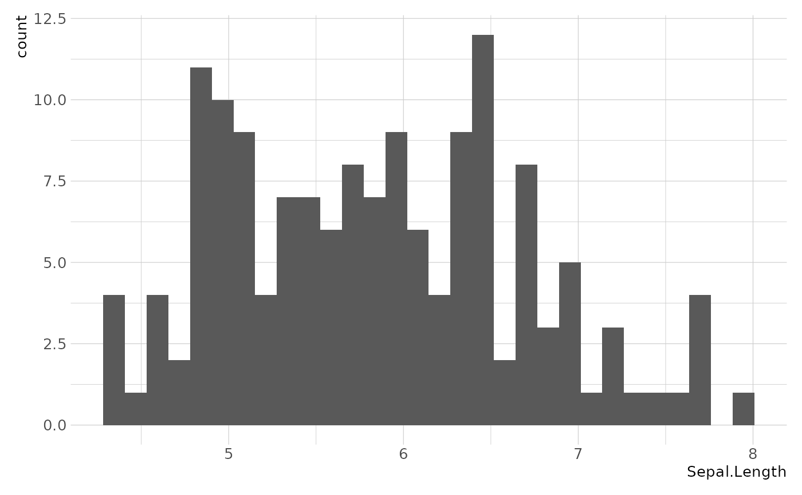

Epurated Ggplot theme (inspired from hrbrthemes)
Usage
epitheme_gg(
base_family = "sans",
base_size = 10,
plot_title_family = base_family,
plot_title_size = 14,
plot_title_face = "bold",
plot_title_margin = 10,
subtitle_family = base_family,
subtitle_size = 9,
subtitle_face = "italic",
subtitle_margin = 15,
strip_text_family = base_family,
strip_text_size = 6,
strip_text_face = "plain",
caption_family = base_family,
caption_size = 9,
caption_face = "italic",
caption_margin = 10,
axis_text_size = base_size,
axis_title_family = subtitle_family,
axis_title_size = 10,
axis_title_face = "plain",
axis_title_just = "rt",
plot_margin = margin(10, 10, 10, 10),
grid_col = "#cccccc",
grid = TRUE,
axis_col = "#cccccc",
axis = FALSE,
ticks = FALSE
)Arguments
- base_family
base font family
- base_size
base font size
- plot_title_family, plot_title_size, plot_title_face, plot_title_margin
plot title family, face, size and margins
- subtitle_family, subtitle_size, subtitle_face, subtitle_margin
plot subtitle family, face, size and margins
- strip_text_family, strip_text_size, strip_text_face
Facet label family, face, size
- caption_family, caption_face, caption_size, caption_margin
plot caption family, face, size and margin
- axis_text_size
font size of axis text
- axis_title_family, axis_title_size, axis_title_face
axis title font family, face and size
- axis_title_just
axis title font justification
- plot_margin
plot margin (specify with ggplot2::margin())
- grid_col, axis_col
grid & axis colors; both default to #cccccc
- grid
panel grid (TRUE, FALSE, or a combination of X, x, Y, y)
- axis
add x or y axes? TRUE, FALSE, "xy"
- ticks
ticks if TRUE add ticks
Examples
## Not run:
library(ggplot2)
library(dplyr)
#>
#> Attaching package: ‘dplyr’
#> The following objects are masked from ‘package:stats’:
#>
#> filter, lag
#> The following objects are masked from ‘package:base’:
#>
#> intersect, setdiff, setequal, union
library(ggplot2)
ggplot(data = iris) +
geom_histogram(aes(x = Sepal.Length)) +
epitheme_gg()
#> `stat_bin()` using `bins = 30`. Pick better value with `binwidth`.
